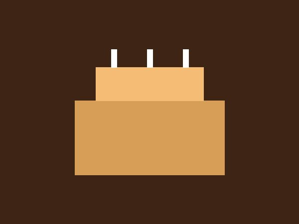
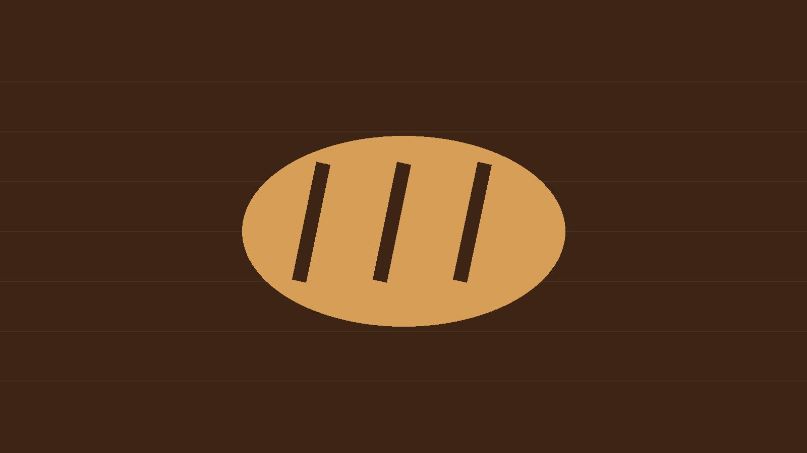
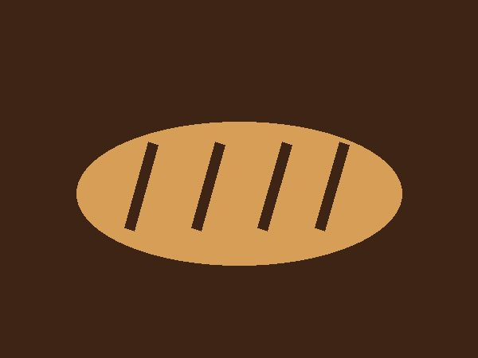
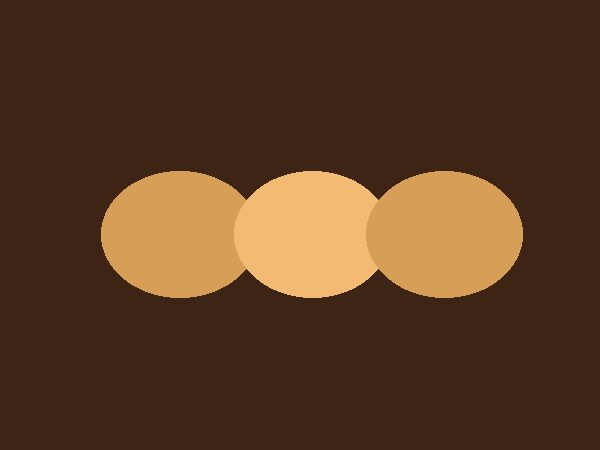

Custom cakes
Birthdays, quinceañeras, weddings, and the occasional retirement. Order at least 72 hours ahead so we can get the design right.

Everything is made in our own kitchen the morning it is sold. Whatever is left at close goes to the Sacramento Food Bank, so what you see in the case is what came out of the oven that day.

Birthdays, quinceañeras, weddings, and the occasional retirement. Order at least 72 hours ahead so we can get the design right.

Bolillo, telera, and a sourdough that has been going since the year we opened. Out of the oven by 6 a.m., usually gone by early afternoon.

Conchas, orejas, and empanadas de calabaza, made the way Maria's mother made them, which is to say by hand and slightly too generously.
We used to take custom orders over the phone and through messages, which worked right up until the holidays. Now the order form asks for the pickup date, the size, and any notes up front, so nothing gets lost and we are not trading messages while you are trying to get on with your day.